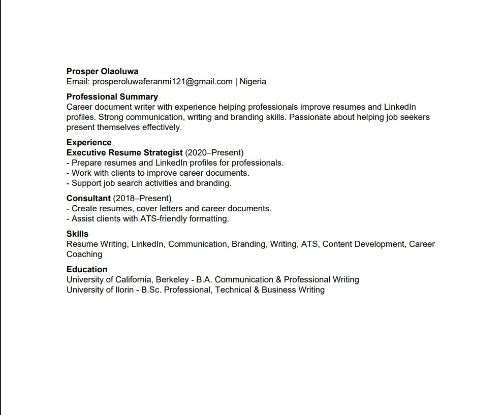
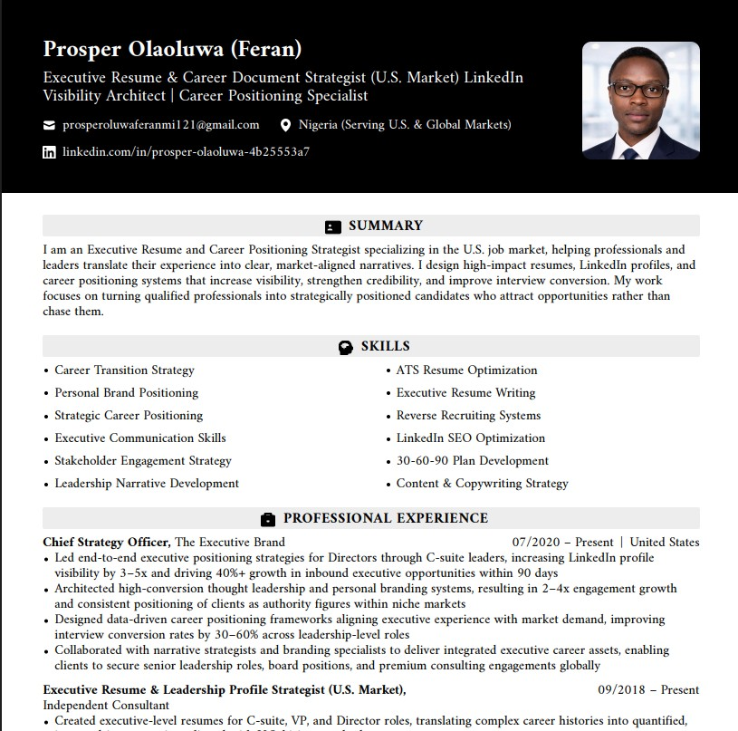

Case study 01
The founder's own resume, transformed
A real example of the Virtue Careers method: the founder's own resume, before and after. Same career. Completely different signal.
Metrics move to the top, scope becomes unmistakable and every line is written for the reader who decides in seconds.


BeforeAfterDrag to compare